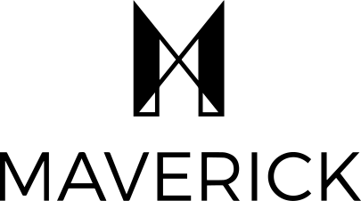
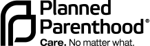
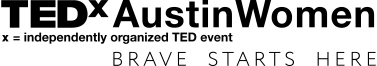

Project Maverick brings girls, their grown-ups, and allies (organizations, companies, and innovation partners) together to create opportunities to practice new habits of power: competition, origination, disruption, and risk-taking. Women Rising is proud to be an Advisory Member and producer of the Maverick Mentorship Platform; empowering girls to develop their vision and hone their ambition, becoming independent thinkers and doers whose dreams, vision, and energy will change the world.
BENEFITTING PROJECT MAVERICK
With only three weeks advanced notice, Women Rising volunteered to Direct and Co-Produce the Women’s March on Austin rally. From development, ideation, pre-production, creative direction, scripting, logistics, talent programming, physical and post-production, our team whole-heartedly contributed to making the January 21st, 2017 event both the largest march as well as the largest gathering of women in Texas History.
BENEFITTING PLANNED PARENTHOOD

Women Rising produced, directed, programmed, and publicized Circular Summit, an invitation-only even for high-growth women entrepreneurs. This select group of esteemed female founders was joined by mentors, media, investors, and experts from across the country during a two-day summit, held in April in Houston, Texas.
BENEFITTING ANDI LEADERSHIP INSTITUTE FOR YOUNG WOMEN
In 2013 Women Rising produced the inaugural TEDxAustinWomen, in association with the United Nations Foundation, marking the first occasion the UN Foundation had joined as an official partner for any TEDx event. Women Rising handled all brand development, sponsorship sales, event planning, programming, pre-event, live, and post production.
Women rising produced, directed, programmed, and publicized Prevention Magazine’s 3rd Annual R3 Summit, a two-day, 1,000+ attendee health and wellness event that took place in Austin, TX in January 2016. With 4 stages including wellness workshops, cooking demos, fitness actives, countless brand activations, and over 25 expert speakers, the R3 Summit helped women ring in the New Year feeling revived, refreshed, and reinvented.
BENEFITTING SETTLEMENT HOME OF AUSTIN